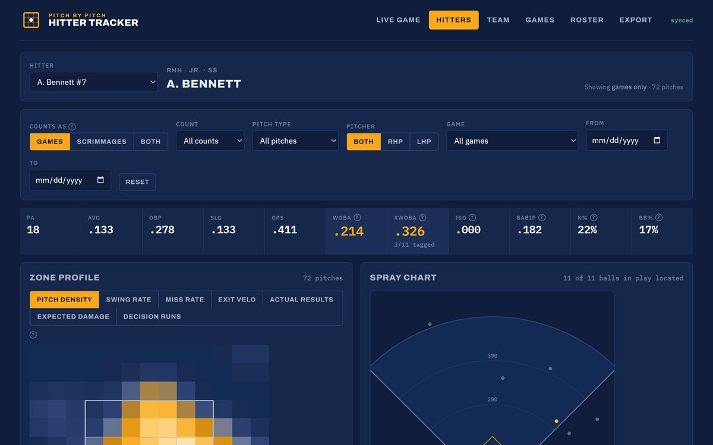

Game day / college program
Mount Marty Hitter Tracker
Pitch-by-pitch tracking and swing-decision reports for Mount Marty hitters. A coach charts the game live, and every hitter page, team page and export updates from the same shared data.
- Live game charting, hitter, team, games and roster views
- Zone profile by pitch density, swing rate, miss rate, exit velo, expected damage and decision runs
- Filter by games or scrimmages, count, pitch type, pitcher hand and date
- One link for the whole staff, with a free-tier hosted database behind it
wOBAxwOBABABIPK% / BB%spray chart